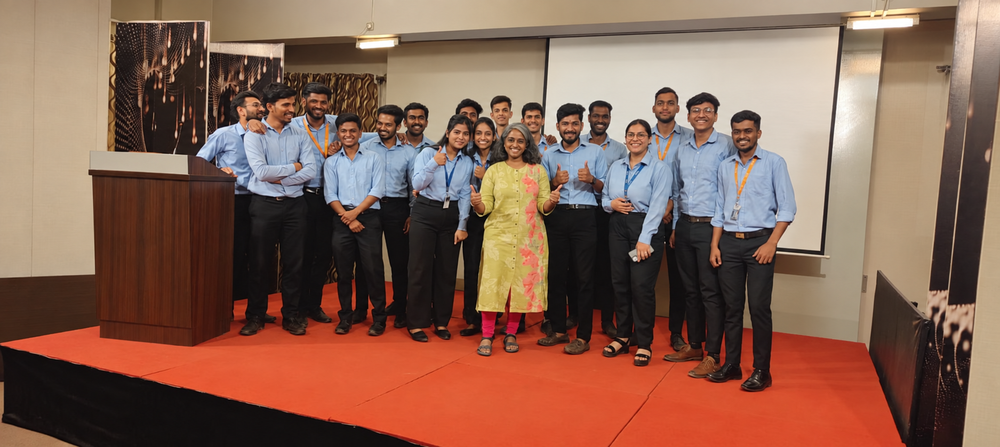
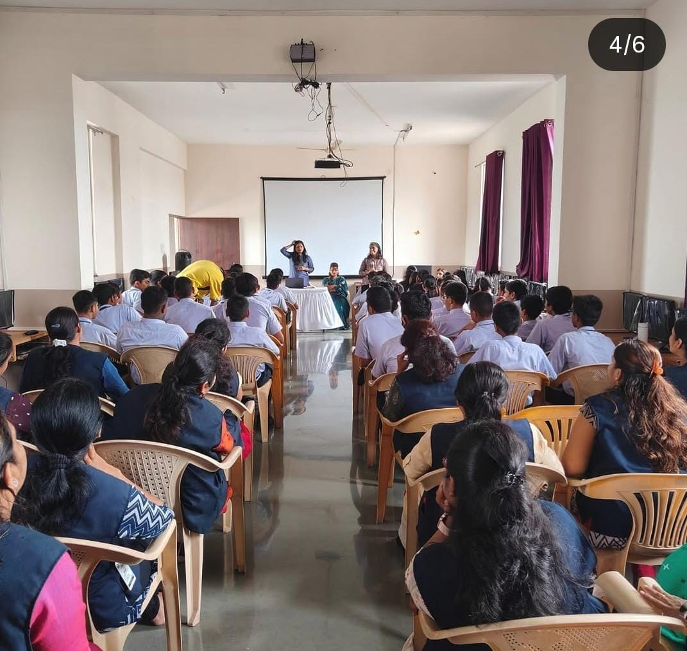
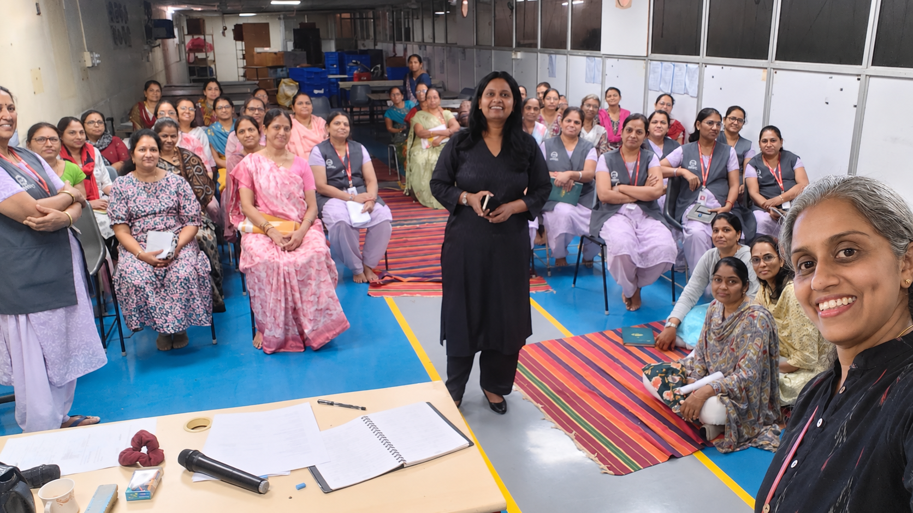

Confidence & expression
Finding your voice, communicating with greater ease and meeting important moments with more self-belief.
Let's Attune workshops
Participative learning experiences designed around what people are facing, what they need to understand and what they want to change.

Our topic areas
These areas can stand alone or come together in one workshop, depending on what your group needs.
Finding your voice, communicating with greater ease and meeting important moments with more self-belief.
Understanding the pressures people carry and exploring more sustainable ways to respond.
Navigating differences, difficult conversations and conflict while building trust and stronger ways of working together.
Helping people understand their response to change, work through uncertainty and adjust to new roles or expectations.
Building perspective around difficult experiences and strengthening awareness of support and appropriate help.
Selected work
This is a selection rather than a complete list. Open a workshop to see who it was for, how it was structured and what participants took away.
Weekly group learning combined with optional one-to-one coaching across one month. The journey explored inner patterns, levels of listening, grief and change, routes to support, and a wider view of life ahead.
Participants found perspective, a place to speak and insight into what may sit beneath the surface.Four activity-led and interactive hours turned a situation often approached with fear into an active, engaging learning experience.
Participants described it as highly interactive, enjoyable and full of learning.Interactive conversation and a practical worksheet created room to examine stress, boundaries, balance and the moments in which we know what matters but still miss the mark.
The participants asked for more sessions like it.Across two thoughtful sessions, participants slowed down, spoke about what had gone unnoticed and looked at the chapter ahead with renewed awareness.
“This workshop was awakening.” Participants valued the warmth, reflection and freedom to speak openly.A month-long online experience combining group workshops with coaching sessions. Participants listened more closely to what was getting in the way, recognised the saboteurs and self-talk holding them back, and found a more honest way to push themselves forward.
A space to turn possibility into a clearer, more purposeful next step.Custom workshops
Tell us who the workshop is for, what they are facing and what you want them to leave with. We will recommend the topic, activities, format and duration.
Discuss a workshopWho is attending, what is happening and what should the workshop help with?
We choose the right topics, examples, activities, depth and duration.
The session creates room to think, speak, practise and learn together.
Clear insights, practical tools or agreed next steps that continue after the workshop.
Some of the people we have worked with
These are a few examples from the many workshops and group sessions we have facilitated.



Upcoming workshops
Dates and registration details will appear here when the next workshop opens.
Would you like us to let you know?
Register your interest